Generated Bald Images


Realistic digital avatars require expressive and dynamic hair motion; however, most existing head avatar methods assume rigid hair movement. These methods often fail to disentangle hair from the head, representing it as a simple outer shell and failing to capture its natural volumetric behavior. In this paper, we address these limitations by introducing PhysHead, a hybrid representation for animatable head avatars with realistic hair dynamics learned from multi-view video.
At the core is a 3D Gaussian-based layered representation of the head. Our approach combines a 3D parametric mesh for the head with strand-based hair, which can be directly simulated using physics engines. For the appearance model, we employ Gaussian primitives attached to both the head mesh and hair segments. This representation enables the creation of photorealistic head avatars with dynamic hair behavior, such as wind-blown motion, overcoming the constraints of rigid hair in existing methods. However, these animation capabilities also require new training schemes. In particular, we propose the use of VLM-based models to generate appearance of regions that are occluded in the dynamic training sequences. In quantitative and qualitative studies, we demonstrate the capabilities of the proposed model and compare it with existing baselines. We show that our method can synthesize physically plausible hair motion besides expression and camera control.
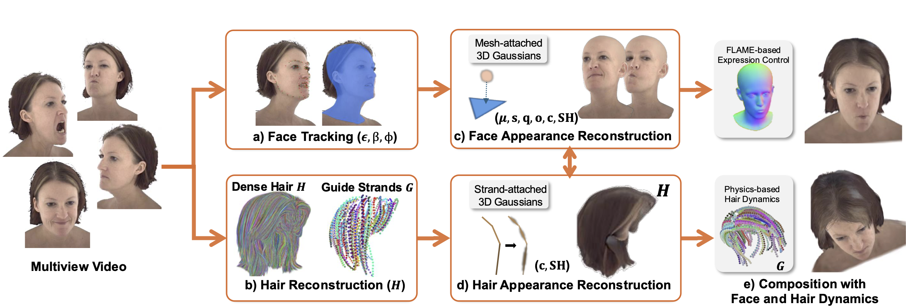
PhysHead reconstructs an animatable 3D human head avatar (e) from a multiview input video. It is based on a 3D Gaussian appearance representation that is split into a face (c) and a hair region (d). The face region uses 3D Gaussians that are attached to a 3DMM-based mesh, which allows for parametric facial expression as well as head pose control (a,c). To enable physics-based animation of the hair region, we rely on a strand-based hair model (b). The appearance of the individual hair strands is represented as structured 3D Gaussians attached to each hair strand segment (d).
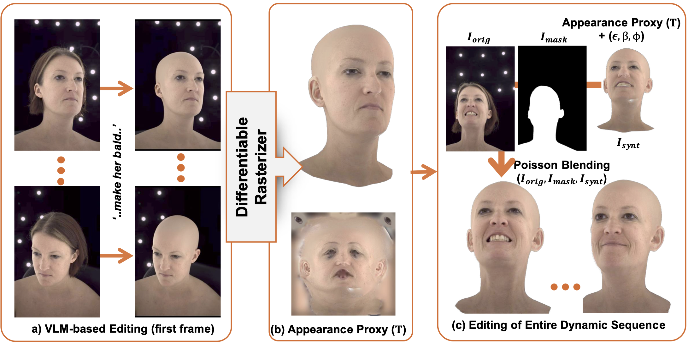
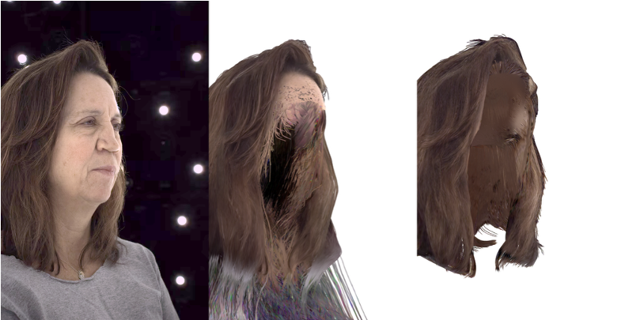
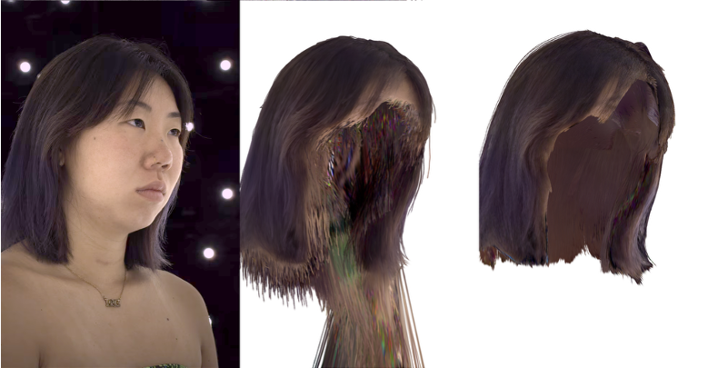
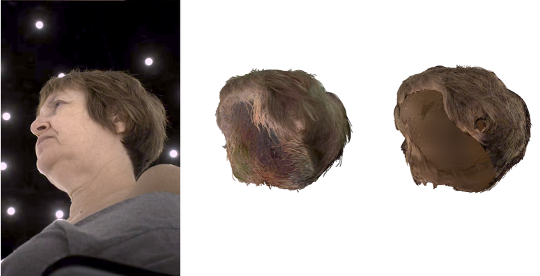
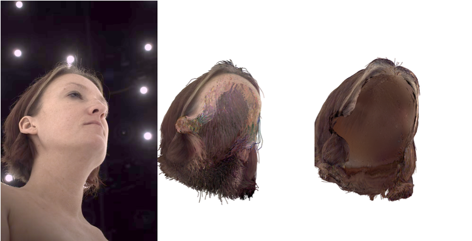
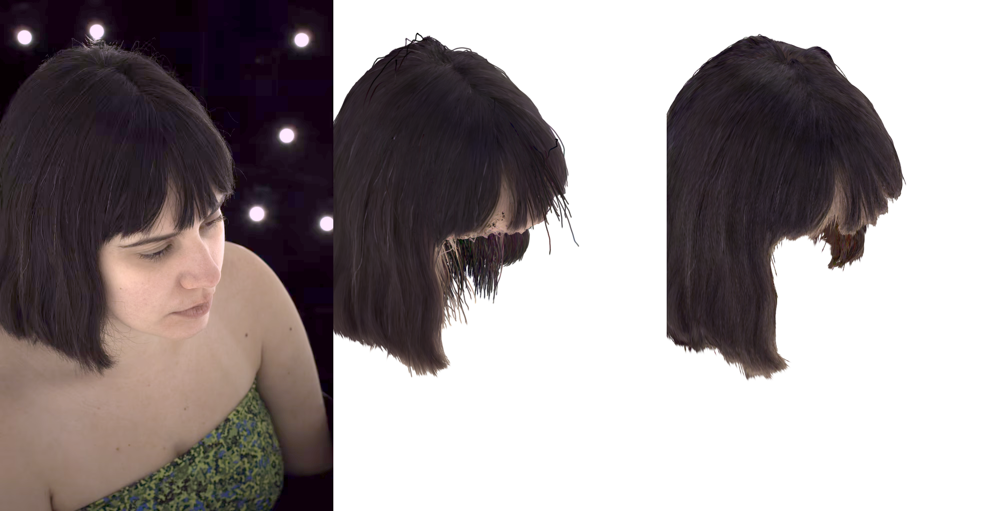
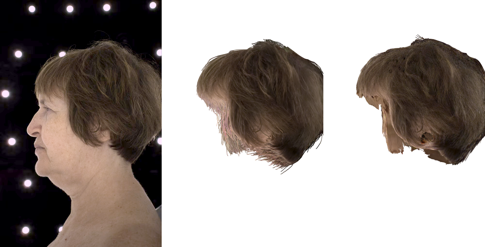
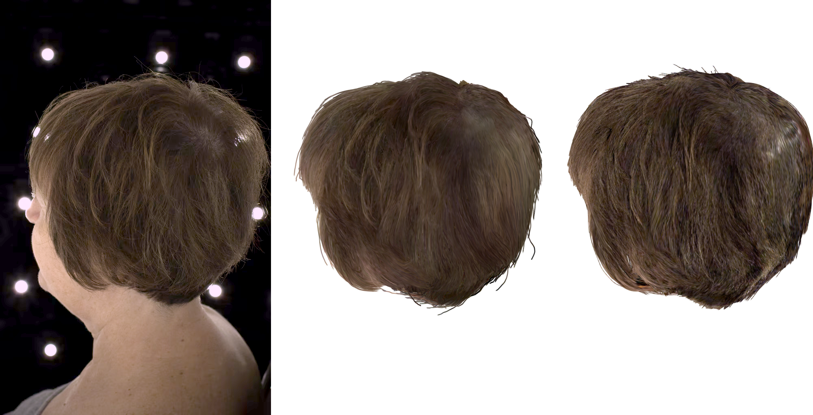
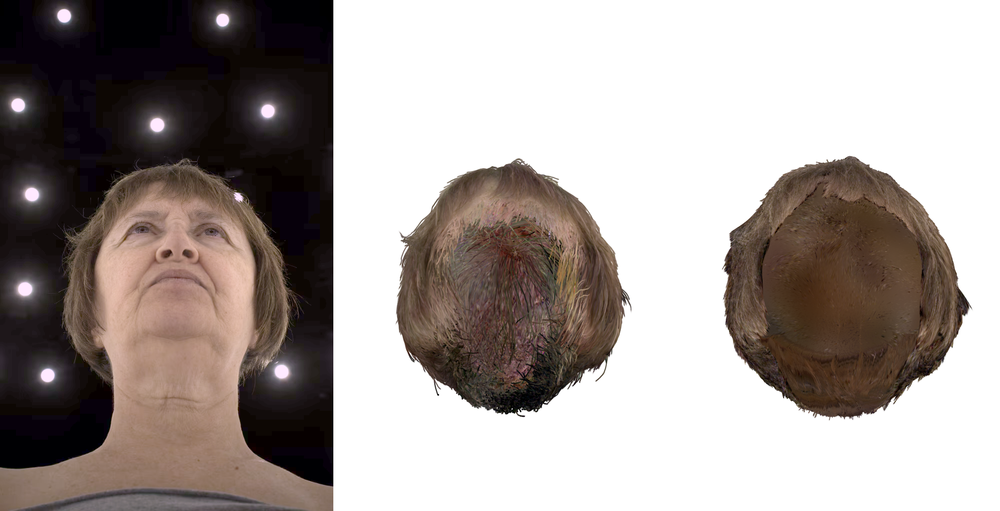
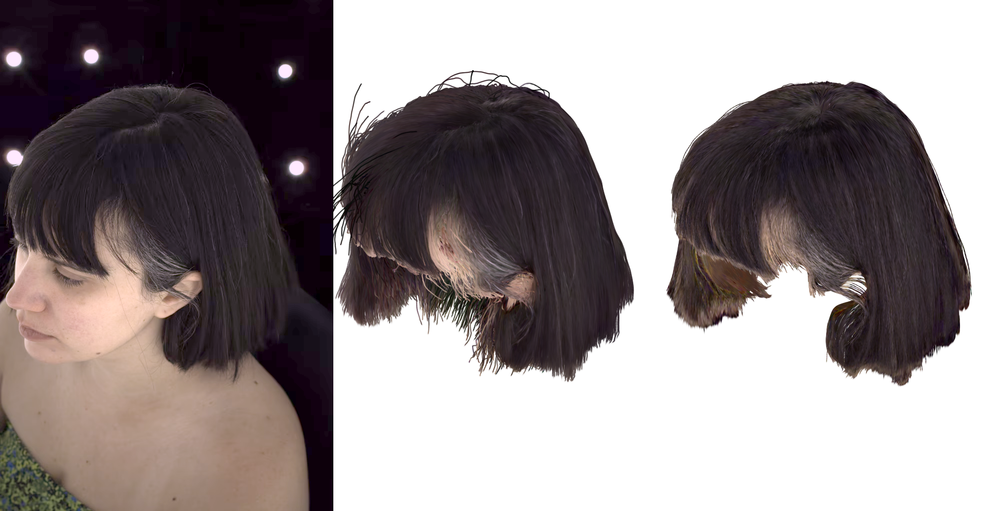
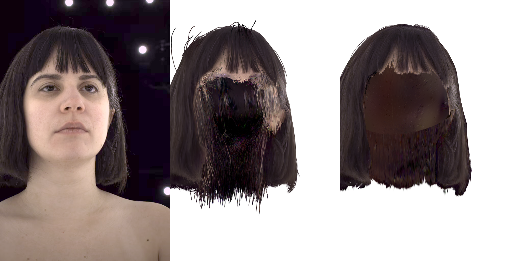


The head avatars reconstructed by PhysHead support hair geometry and appearance editing thanks to the underlying strand-based geometry.
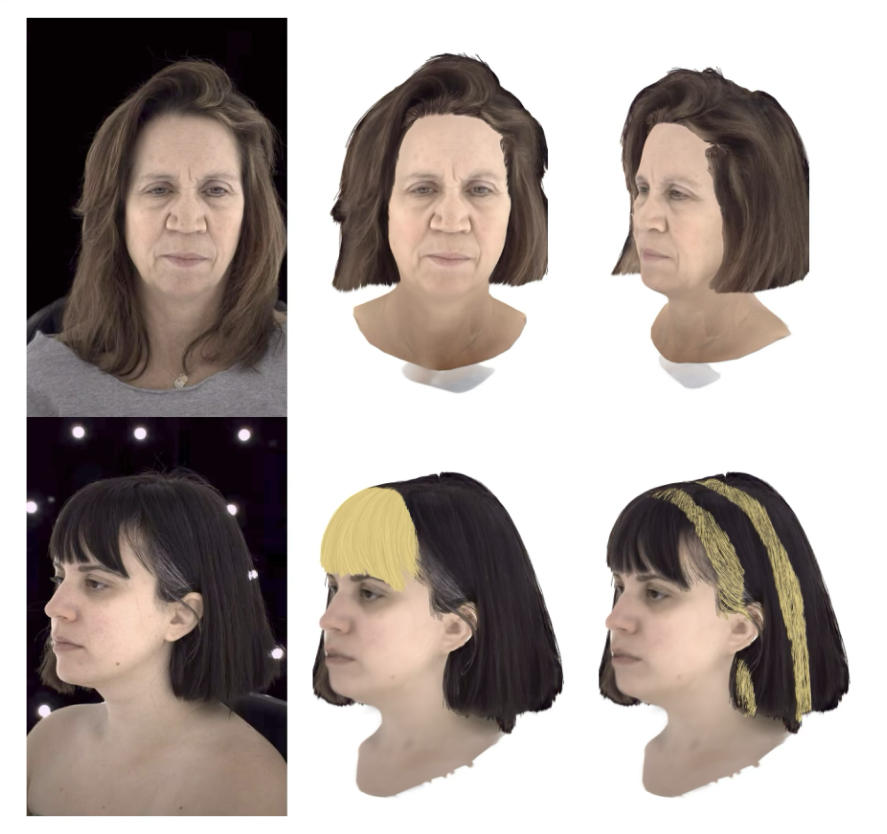
The head avatars reconstructed by PhysHead are compatible with physics simulators and can be used to synthesize effects such as wind motion.
@inproceedings{kabadayi2026physhead,
title = {{PhysHead}: Simulation-Ready Gaussian Head Avatars},
author = {Kabadayi, Berna and Sklyarova, Vanessa and Zielonka, Wojciech and Thies, Justus and Pons-Moll, Gerard},
booktitle = {Proc. IEEE/CVF Conf. on Computer Vision and Pattern Recognition (CVPR)},
year = {2026},
month = {June}
}